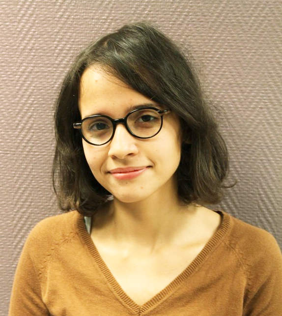

Hanene HAOUAM

BAC + 5, double compétence Informatique / Procédés industriels
Adresse : 180 avenue Roger Salengro, 69100 Villeurbanne.
Téléphone : 0616398881
Email : hanene.haouam@etu.univ-lyon1.fr
Menu
Compétences
- Langages : JAVA, C, SQL, Fortran.
- Systèmes d'informations : Merise, UML, ERP (SAP), CAO (CATIA V5).
- Web : HTML, CSS, JavaScript.
- Langues : Anglais courant, en prépation du TOEIC.
En cours : Master Compétences Complémentaires en Informatique (CCI) , université de Claude Bernard Lyon 1. Bac + 5.
2017/2018 : Master Contrôle de l'Environnement Industriel (CEI), université de Caen Basse-Normandie. Bac + 5.
2012/2017 : Master Genie des Procédés Industriels (GPI), université des Sciences et de la Technologie Houari Boumediene. Bac + 5.
Expériences professionnelles
2018 (6 mois) : Stage Ingénieur HSE, Groupe COFEL, site de Criquebeuf-sur-Seine :
- Création du document unique d'évaluation des risques professionnels.
- Gestion du risque chimique avec l'outil informatique SEIRICH.
- Audit et mise en conformité des postes de travail.
2017 (6 mois) : Stage Recherche, Centre de Recherche Nucléaire de Draria, Alger :
- Caractérisation de la bentonite avec les différentes techniques d’analyse.
- Amélioration de la capacité d’adsorption de la bentonite par des méthodes d’activation chimiques et
thermiques.
- Optimisation du procédé d’adsorption d’un effluent uranifère réel sur la bentonite.
Centres d'intérêt
- Evénementiel : Membre organisateur de Entrepreneurship Summer School Algeria (2016).
- Photographie : Membre du club Equinoxe (2012).